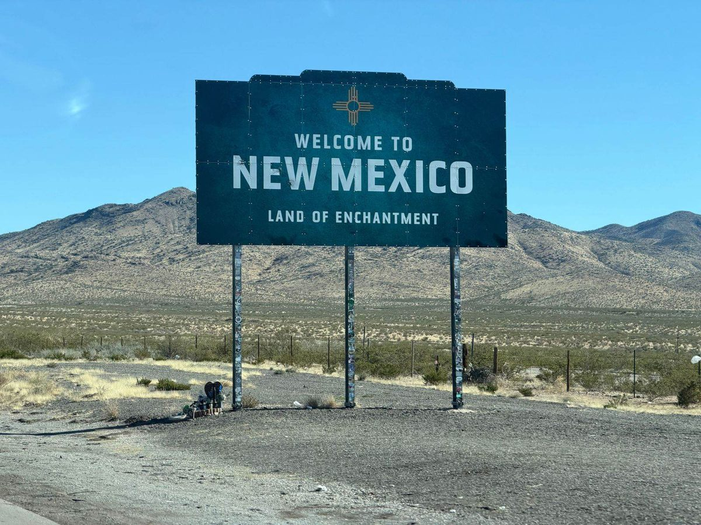

Thirty-Sixth Parallel
Psilocybin facilitation designed around the specific landscape of women's lives — grief, identity, infertility, life transitions, and the question of who you are becoming.
Thirty-Sixth Parallel LLC is a New Mexico company that plans to provide psilocybin services under the New Mexico Medical Psilocybin Program once it is licensed. The name comes from the 36th parallel, the line of latitude that crosses northern New Mexico.
Isn't working with a woman just the same?
It's a fair question — and the honest answer is: no, it's not just the same. Not because a skilled male facilitator can't do good work, but because of what psilocybin surfaces, and what determines how safe you feel meeting it.
Psilocybin reaches into the interior — the grief held in the body, the shame that was never spoken, the stories you have carried about yourself as a woman, in a woman's body, navigating what women navigate. That material is specific. It carries particular weight and particular vulnerability.
Who holds that space with you is not a neutral variable. The felt sense of being truly understood — not just clinically familiar with, but actually inhabiting the same territory — shapes what becomes accessible in the room. It shapes what you feel safe enough to let yourself know.
A facilitator who has never navigated what it means to exist in a woman's body — to have your experiences minimized, your grief go unnamed, your identity shaped by expectations you didn't choose — can be present and skilled. But there is something different about being with someone who doesn't need the context explained. Who already knows what the water feels like.
Women's psychology in psilocybin work — what the research and clinical experience show
Autonomy and the therapeutic relationship
Women are socialized — more often and more deeply than is acknowledged — toward deference, self-silencing, and minimization of their own needs. In a psilocybin session, this can manifest as difficulty accessing what is most important, or as a reflexive orientation toward the facilitator's comfort rather than one's own truth.
A therapeutic relationship built on genuine peer understanding — one in which the facilitator does not need to be educated about women's experience — creates conditions in which women's autonomy in the session is more fully available. You are more likely to follow the experience where it wants to go rather than managing the room.
The body in psilocybin work
Psilocybin is a profoundly somatic experience. It surfaces material through the body — sensation, emotion, movement — not just through thought. For women navigating hormonal transitions or grief that lives in the body, this can be especially powerful and, at times, especially vulnerable.
Having a facilitator who is attuned to the body's role in women's psychological experience — including the felt sense of safety in a body that may have been the site of loss, change, or pain — is not a small thing. It shapes the entire quality of the work.
Grief that women carry alone
Much of the grief women bring to psilocybin work is grief that has had nowhere to go — infertility loss, the end of fertility, the grief of a life that diverged from expectation, the loss of a former self. These are losses that often go unacknowledged by the world.
A facilitator who carries no ambiguity about whether this grief is real, significant, and worthy of the full attention of the session — who does not need convincing — changes what is possible when that grief surfaces.
Identity work specific to women
Psilocybin's well-documented capacity to loosen rigid self-concepts and offer a genuine shift in perspective is particularly powerful for women in the middle of identity transitions. But the specific content of those identities — what it means to be a woman of a certain age, to have or not have children, to no longer be the person you were — is particular.
Navigating that content in a session requires a facilitator who can track its specific texture, who recognizes what is being offered up without requiring explanation. That specificity is what this practice is built for.
Women at significant thresholds
You don't need to have a clinical diagnosis. You need to be at a place in your life where something is being asked of you — and where the ordinary tools aren't enough.
"I don't recognize myself anymore."
Major transitions — hormonal, relational, personal — can strip away a familiar sense of self. Psilocybin work can help you move through that disorientation into something more solid and more yours.
"I'm grieving something no one else seems to understand."
Infertility grief, reproductive loss, the end of a chapter — psilocybin reaches what other forms of support cannot, and it does it in a single day rather than years.
"I've done the work. I still feel stuck."
Many women who come to this practice have years of therapy, coaching, or spiritual practice. Psilocybin offers a different entry point — not through insight alone, but through direct experience of a shift.
"What do I want the rest of my life to look like?"
Empty nesting, retirement, major relationship change — these transitions ask you to rebuild your sense of purpose and identity. Psilocybin is exceptionally well-suited to this kind of existential inquiry.
"I've been putting everyone else first for so long."
The psilocybin session is, perhaps more than anything else, a space that belongs entirely to you. What you want, what you need, what you are most afraid to know — it all matters here.
"I'm curious but I've never done anything like this before."
You do not need prior psychedelic experience. Good preparation and a skilled facilitator are what matter. That is exactly what this practice provides.
"Who am I now?" is one of the most important questions you can ask
Major life transitions ask us to rebuild our sense of self — sometimes gradually, sometimes all at once. Empty nesting, retirement, divorce, the death of someone central to your identity, a career that no longer fits, the realization that the life you built no longer quite feels like yours. These are not small adjustments. They are identity-level events. Psilocybin's well-documented capacity to loosen rigid self-concepts and offer genuine perspective shift is particularly powerful here.
Grief & Loss
Grief takes many forms — death, relationship endings, lost futures, parts of yourself you are leaving behind. Psilocybin has a well-documented capacity to help people move through complicated grief and find new meaning.
Stage-of-Life Transitions
Empty nest, retirement, aging, adult children leaving home — transitions that can feel like a loss of purpose and identity even when they are wanted. Psilocybin work helps you find what comes next.
Existential & Meaning Questions
"What was all of this for?" and "What do I want the rest of my life to look like?" — psilocybin is particularly well-suited to this kind of inquiry, opening perspectives that ordinary consciousness keeps closed.
This grief is real, and it deserves real support
Infertility is a particular kind of grief — one that often happens in silence, without the rituals and community acknowledgment that accompany other losses. Whether you are in the middle of fertility treatment, facing the end of that road, grieving a pregnancy loss, or reckoning with a future that looks different than you expected, this grief is profound.
It is also grief that affects identity at its deepest level — your sense of who you are as a woman, your relationship, your sense of the future. It deserves more than generalized coping strategies.
Psilocybin's capacity to facilitate new perspectives on grief, meaning, and identity can be particularly valuable when the grieving process has become stuck or when the loss has destabilized your sense of self. The work reaches what ordinary therapeutic approaches cannot always reach.
When hormonal transition becomes an identity event
Perimenopause and menopause are not just physical changes — they can be a fundamental questioning of who you are. Mood instability, anxiety that arrived in midlife and won't leave, grief for the body and stage of life you are leaving behind, a sense that the life you built no longer quite fits. These are psychological and identity-level experiences that deserve expert attention.
Psilocybin's mechanism — promoting neuroplasticity and temporarily quieting the default mode network — is directly relevant to the mood and identity disruption of this transition. Clinical research at Johns Hopkins, NYU, and Imperial College London shows significant lasting reductions in depression and anxiety. Colorado's regulated framework means this work can be pursued legally, safely, and with full clinical support.
Psilocybin addresses psychological and emotional symptoms, not physical symptoms like hot flashes. Always consult your physician regarding physical health concerns.

Taos, New Mexico, starting January 2027.
New Mexico is currently in the rulemaking process following state legislation authorizing medical psilocybin. The program is expected to begin in January 2027. I live in Taos, am involved in that process, and plan to offer treatment there once certified. New Mexico's program requires a qualifying diagnosis; see the Taos page for details. Many women find the travel itself meaningful — a deliberate act of arriving for their own work.
Sessions through Colorado's regulated natural medicine program are available on a limited basis. Ask about availability during a free consultation.
Preparation and integration sessions are available via telehealth to anyone, anywhere — no state restrictions apply. You can begin that work from home.
On this site
How It Works
Preparation, the medicine session, integration, the science, Colorado's program, and pricing.
Taos, New Mexico
Planned medical psilocybin treatment in Taos: who qualifies, what to expect, cost, and travel.
Preparation & Integration
Preparation and integration sessions by telehealth.
Ready to learn more?
A free 15-minute consultation is the right first step — honest information about whether this work is a good fit for you, what the process looks like, and what working together would mean.